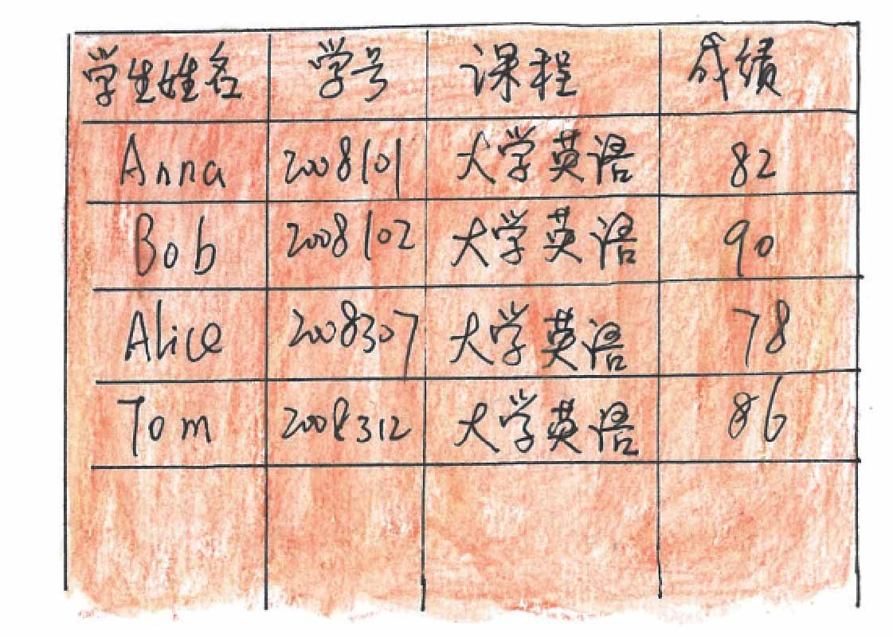
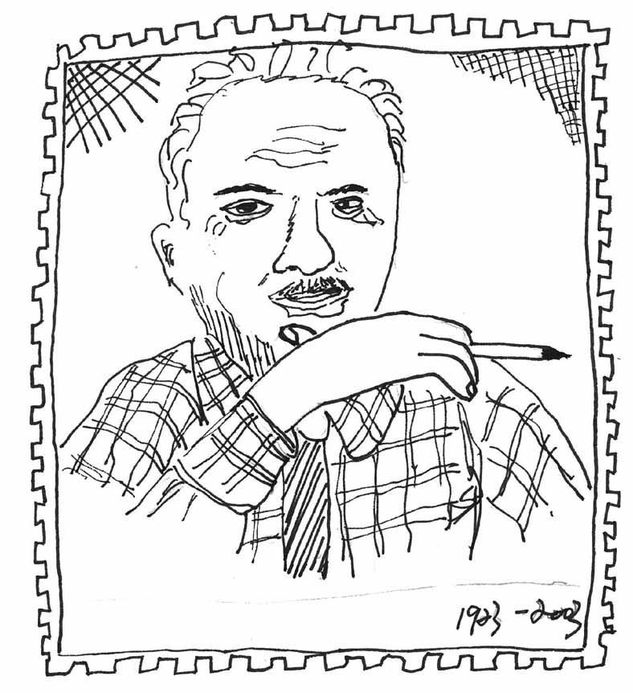
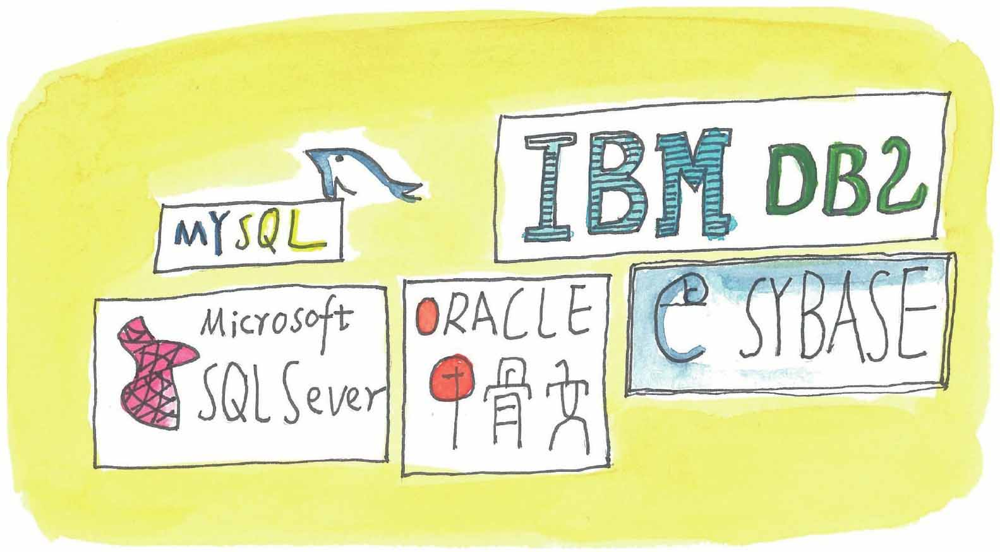
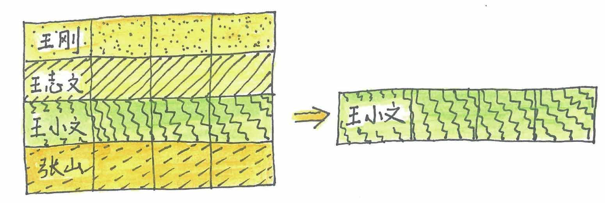
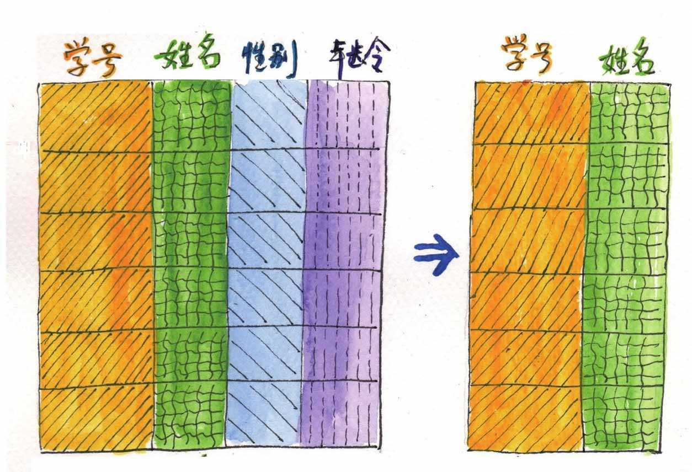
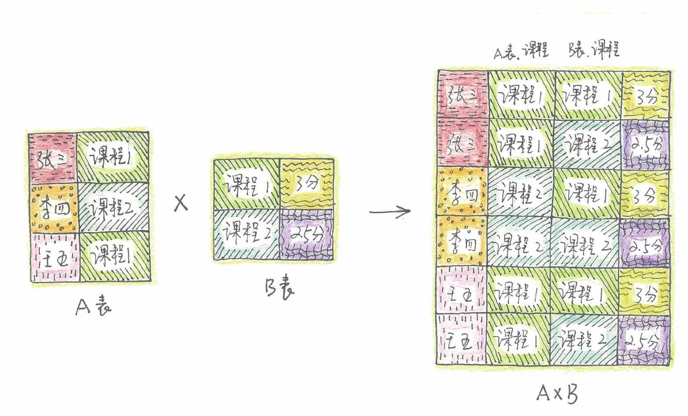
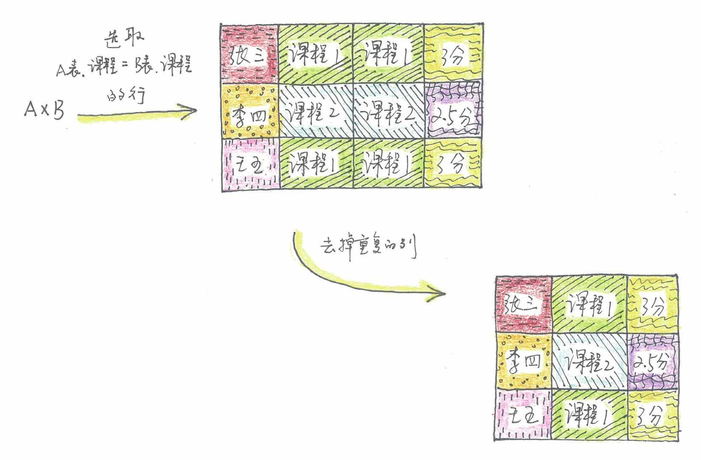
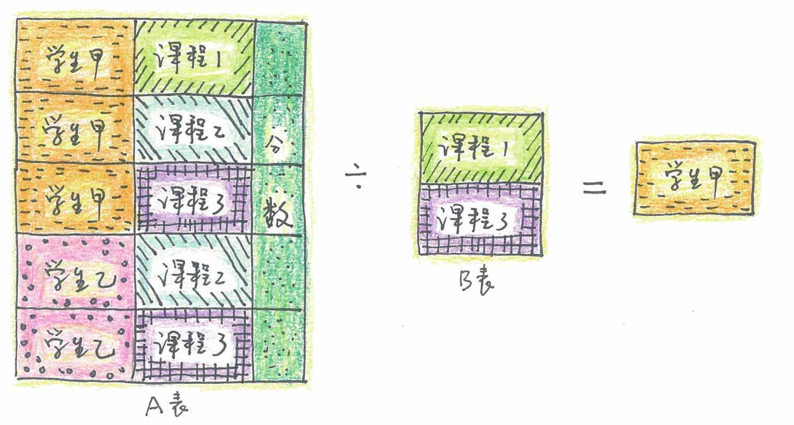

科德将他的思想最终收集到他在1970年发表的一篇名为《用于大型共享数据库的关系数据模型》的论文中，这篇论文为数据库系统提出了一种崭新的模型。
论文的核心思想就是：采用“二维表”（Table）这种结构来存储和操作数据。之所以叫二维表，是因为它由行和列构成。比如，下面这张表就是一张“学生信息”二维表，由4条记录（Record）构成，每一行代表一条记录，而在实际的应用中记录会多得多。二维表的每一列称为属性，这张二维表包含了学生姓名、学号、课程、成绩四种属性。

这种新型的数据结构不同于已经存在的层次模型和网状模型，科德把这样的二维表格形式的数据模型叫作“关系模型”。关系型数据库是由许多这样的二维表所组成的。
科德的这篇论文，为关系数据库技术奠定了理论基础，美国计算机协会在1983年把这篇论文列为从1958年以来四分之一世纪中具有里程碑意义的25篇研究论文之一。
科德一生具有传奇色彩，他20岁应征入伍参加第二次世界大战，在英国皇家空军服役，21岁任盟军空军机长，参与了许多惊心动魄的空战。二战结束后，他到牛津大学学习数学，之后在IBM公司任职。20世纪60年代，他已年近40，又重返校园进修，50岁的时候为数据库领域开辟了一个新的时代。由于科德的杰出工作，他在1981年获得图灵奖，被誉为“关系数据库之父”。

埃德加·科德

流行的几种大中型关系数据库LOGO
不过，科德的理论公开后，并没有立即被他所在的IBM公司采用。其中一个原因是科德的想法在当时并没有被人们理解，另一个原因是IBM已经对当时销售还不错的层次型数据库管理系统IMS进行了大量的投资。
总之，由于种种原因，蓝色巨人放弃了这个后来价值上百亿的产品。
真正将关系数据库商业化并推向市场的是甲骨文（Oracle）的创始人拉里·埃利森（Larry Ellison）。这将涉及另一段传奇故事了，我们暂且不谈这段传奇，还是先来看看科德曾经显得曲高和寡的思想是什么样的。
举例来说，假设你开学时到某大学的计算机学院报到后，学校会给你这个新生一个编号，比如是201900231，他们会在类似student这样的表中增加一行记录（当然，实际上信息会更多）：
“201900231，王小文，计算机科学与技术”。
这时，涉及的其实是关系的“并”运算，将新“增加的行”与student表中“原来的行”进行的一个“并”运算。
如果小文你读了几天不想读了，你想要换个专业（当然我不鼓励这种事情发生，这只是打个比方哦），那么你所在的学院就得删除你的信息。这其实是将student表中的行与“王小文”所在的行，进行的一个“差”运算。
因为关系也是一类特殊的集合，所以这里关系的“并”和“差”运算，跟集合的“并”“差”运算的性质其实是一样的。
仅有这些运算还不够，因此，科德又专门定义了一组新的运算：选择、投影以及连接、除等。
比如，从student表中找出姓名为“王小文”的学生，要用到“选择”运算，选择运算其实是选取“表”中满足条件的“行”。

选择运算其实是选取“表”中满足条件的行
从student表中查询所有学生的“姓名”和“学号”信息要用到的是“投影”运算，投影运算是取“表”中指定的“列”。

投影运算是取表中指定的列
如果我们要查询的信息不在一张表上怎么办呢？没关系，科德为我们设计了关系的“连接”运算，连接运算可以在两张表的笛卡儿积中根据我们的需求组成新二维表。
比方说我要查询的信息：“学生”“选修课程”“课程学分”分布在两张表，即A表和B表中，运算的过程是怎样的呢？
首先我们求出两张表的笛卡儿积A×B，这样可以将两张表的信息综合起来。

求出两张表的笛卡儿积A×B
但是两张表的笛卡儿积会产生一些冗余的信息，这时，我们可以用“连接”运算去除那些对本次查询无意义的信息，具体过程可以是这样的：从A×B笛卡儿积选取符合“A表.课程=B表.课程”条件的“行”，再去掉重复的“列”，这样我们就查询出了所有学生的选修课程以及学分的信息了（实际上有多种连接运算，这里列举的是其中一种）。

“连接”运算的过程
两张表还可以进行所谓的“除”运算，下面的图表示的是一个“除”运算的过程，即查询出选修课程1和课程3的学生是学生甲。
运算的过程是这样的：
先求出A表中学生甲选修的课程：{课程1，课程2，课程3}；
再求出A表中学生乙选修的课程：{课程2，课程3}。
求出B表在课程属性上的投影，即取B表“列”的值：{课程1，课程3}。
可以看出学生甲选修的课程包含了B表的投影。
所以最后查询的结果为：选修课程1和课程3的学生是学生甲。

“除”运算的过程
这些运算构成了一种新的代数——关系代数，关系代数算来算去全是表，运算的结果也是表。